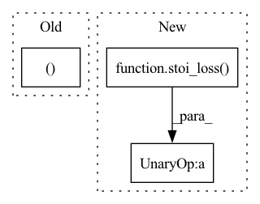

Pattern ID :2906

Before Change
)
stats["loss"] = loss.detach()
pesq_scores, stoi_scores = multiprocess_evaluation(
predict_wavs.cpu().numpy(),
target_wavs.cpu().numpy(),
lens.cpu().numpy(),
After Change
multiprocessing.cpu_count(),
)
stats["pesq"] = pesq_scores
stats["stoi"] = -stoi_loss(predict_wavs, target_wavs, lens)
if stage == "test":
// Write wavs to file
In pattern: SUPERPATTERN
Frequency: 3
Non-data size: 3
Instances
Fragment ID: 11345039
Project Name: speechbrain/speechbrain
Commit Name: f3be6712dfde068df1aa5ad63aa5d4c069b3ae46
Time: 2020-07-25
Author: Peter Plantinga
File Name: recipes/Voicebank/enhance_waveform_map/experiment.py
M Class Name: SEBrain
N Class Name: SEBrain
M Method Name: evaluate_batch(3)
N Method Name: evaluate_batch(3)
M Parent Class: sb.core.Brain
N Parent Class: sb.core.Brain
M File Name: recipes/Voicebank/enhance_waveform_map/experiment.py
N File Name: recipes/Voicebank/enhance_waveform_map/experiment.py
M Start Line: 105
M End Line: 112
N Start Line: 92
N End Line: 110
'>
Before Change
wavs, lens = truncate(wavs, lens, params.max_length)
wavs, lens = wavs.to(params.device), lens.to(params.device)
loss = params.compute_cost(predictions, wavs, lens)
return loss, {}
def evaluate_batch(self, batch, stage="valid"):
inputs, targets = batch
After Change
multiprocessing.cpu_count(),
)
stats["pesq"] = pesq_scores
stats["stoi"] = -stoi_loss(predictions, target_wavs, lens)
if stage == "test":
// Write wavs to file
'>
Fragment ID: 11345045
Project Name: speechbrain/speechbrain
Commit Name: 3f3b92bc7eb78dacaae812693f782cb134ef4358
Time: 2020-08-05
Author: plantinga.peter@protonmail.com
File Name: recipes/Voicebank/enhance_waveform_map/experiment.py
M Class Name: SEBrain
N Class Name: SEBrain
M Method Name: compute_objectives(4)
N Method Name: compute_objectives(4)
M Parent Class: sb.core.Brain
N Parent Class: sb.core.Brain
M File Name: recipes/Voicebank/enhance_waveform_map/experiment.py
N File Name: recipes/Voicebank/enhance_waveform_map/experiment.py
M Start Line: 85
M End Line: 87
N Start Line: 85
N End Line: 110
'>
Before Change
lens = lens * target_wavs.shape[1]
// Evaluate PESQ and STOI
pesq_scores, stoi_scores = multiprocess_evaluation(
pred_wavs.numpy(),
target_wavs.numpy(),
lens.numpy(),
After Change
ids, target_wavs, lens = targets
loss, stats = self.compute_objectives(predictions, targets, stage=stage)
stats["loss"] = loss.detach()
stats["stoi"] = -stoi_loss(pred_wavs, target_wavs, lens)
// Comprehensive but slow evaluation for test
if stage == "test":
lens = lens * target_wavs.shape[1]
'>
Fragment ID: 11345040
Project Name: speechbrain/speechbrain
Commit Name: 2770f23d627a0e4799c08b433d7a7a13b127a011
Time: 2020-07-24
Author: Peter Plantinga
File Name: recipes/Voicebank/enhance_spectral_mask/experiment.py
M Class Name: SEBrain
N Class Name: SEBrain
M Method Name: evaluate_batch(3)
N Method Name: evaluate_batch(3)
M Parent Class: sb.core.Brain
N Parent Class: sb.core.Brain
M File Name: recipes/Voicebank/enhance_spectral_mask/experiment.py
N File Name: recipes/Voicebank/enhance_spectral_mask/experiment.py
M Start Line: 99
M End Line: 123
N Start Line: 94
N End Line: 116